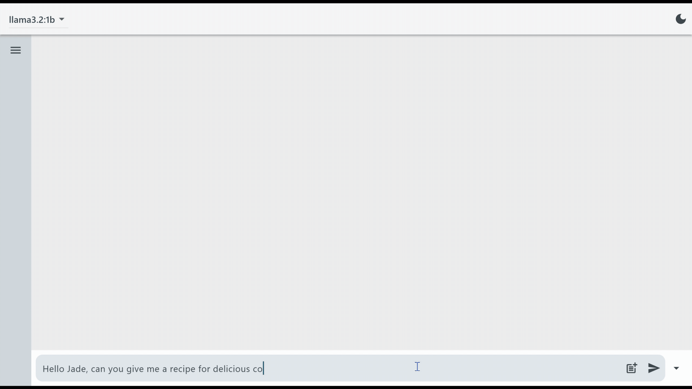

About 1.7× average reading speed
About 6× average reading speed
Average adult reading speed is roughly 4 words (5–6 tokens) per second. Generation speed from Ollama's eval_count / eval_duration. 7B measured on an otherwise idle laptop; 1B measured with other applications running.
Jade is a private, local-first desktop AI app that runs open-source LLMs entirely on the user's machine: streaming chat, document analysis, and persistent history, with no cloud API behind it. It is the flagship product of ClosedAI Solutions, the company I co-founded with William Wakefield (Yale) in 2025, built for small and mid-sized businesses in healthcare, finance, legal, and retail that need AI but can't send client data to someone else's servers.
Popular AI tools are cloud-based: your data goes to external servers and may train future models. For firms handling client records that is a compliance risk, so many avoid AI altogether and fall behind.
Run the model on the user's own hardware. Prompts and documents never leave the machine, with 100% offline processing. The hard part is packaging that so a non-technical team can install and use it.
Open-source models sourced from Ollama: download any by name with live progress, filter installed models, and hot-swap between them mid-session. The last-used model is remembered.
Real-time token streaming with mid-generation cancel. Stopping a response saves the partial answer, so no work is lost.
PDF, DOCX, and XLSX files are parsed into model context locally, with attachment previews and per-file removal. Nothing is uploaded.
Full conversation history in SQLite, with Markdown rendering and syntax-highlighted code blocks.
Windows and macOS installers bootstrap the inference runtime and a default model, turning setup into a guided install.
A single Flutter/Dart codebase powers both the Windows and macOS apps.
As co-founder I shaped what Jade should be and how it is positioned for businesses that can't use cloud AI, and built the product alongside William, who led the AI and engineering side with a focus on healthcare applications. I focused on the desktop app's features and UI.